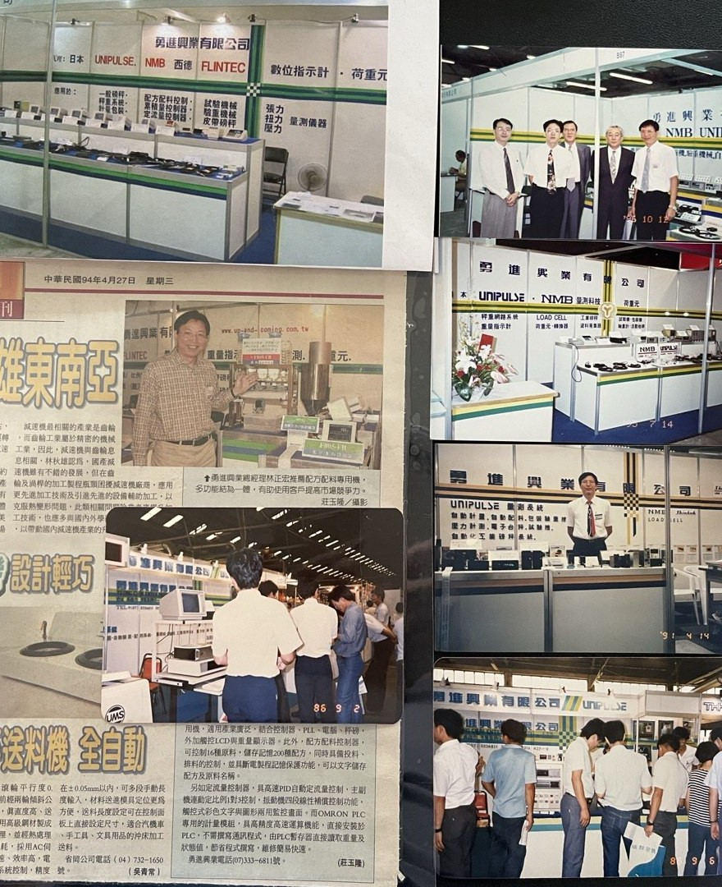

UNIPULSE
UNIPULSE
日本量測與控制品牌，聚焦秤重控制、力量量測與工業自動化控制器，適合高精度量測與設備整合應用。
前往品牌官網ABOUT
勇進興業有限公司創立於 民國 73 年 11 月，至今已超過 40 年，長期專注於工業量測相關設備，特別以荷重元與顯示器 / 控制器產品為主要核心，並延伸至訊號轉換器、扭力量測、應變計與周邊配件，服務對象涵蓋自動化設備、產線秤重、機械整合、研究與測試等場域。
第二階段新版網站將把原網站既有產品型號與照片，逐步依照代理品牌整理成可瀏覽的產品展示頁， 讓客戶能更快找到對應品牌、型號與應用方向。
HISTORY
勇進興業自創立以來，持續深耕量測與秤重相關市場，透過品牌代理、展會交流與長期服務累積產業信任。 這些歷史紀錄也反映了公司與國際量測品牌的合作脈絡。

BRANDS
日本量測與控制品牌，聚焦秤重控制、力量量測與工業自動化控制器，適合高精度量測與設備整合應用。
前往品牌官網提供荷重元、數位指示計、轉換器、扭力轉換器與應變計等產品，適合力量、重量與應變量測場景。
國際知名荷重元品牌，強調高精度、耐用與客製量測解決方案，適用工業秤重與客製化力學量測需求。
前往品牌官網PRODUCT GROUPS
勇進興業主要產品焦點之一，對應各式秤重、力量量測與設備載重感測需求。
勇進興業主要產品焦點之二，適合產線、自動計量、顯示、控制與資料監測整合。
將感測器訊號轉換為工業控制系統可用格式。
用於力量檢測、壓力/拉力控制與製程監測。
適用結構應變、扭矩監測與研究測試應用。
支援現場導入、安裝固定、訊號處理與整體系統搭配。
CATALOG PREVIEW
這一版先把原站既有產品脈絡整理成「品牌分區 + 型號展示占位」的產品型錄雛形，下一輪再把原站照片逐批補齊。
APPLICATIONS
包裝、配料、送料、產線監控。
壓力/拉力測試、品質檢測、製程控制。
控制器、轉換器、現場訊號整合與 PLC/產線應用。
CONTACT
如果你需要產品選型、品牌型錄、應用建議或報價，歡迎直接聯絡。